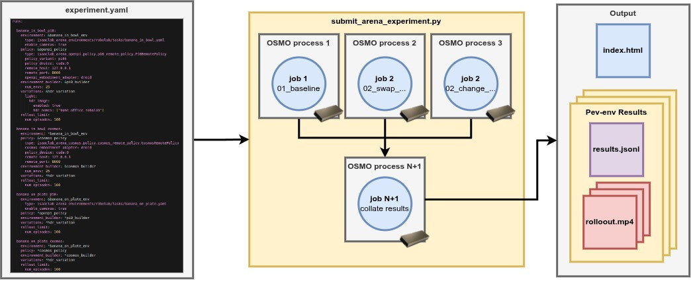
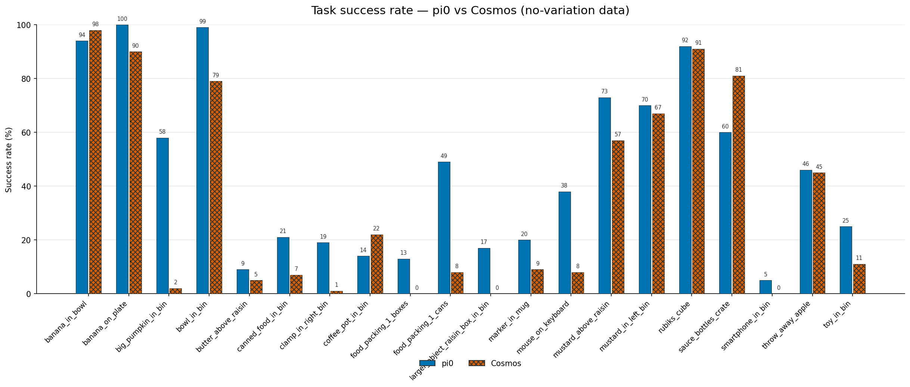
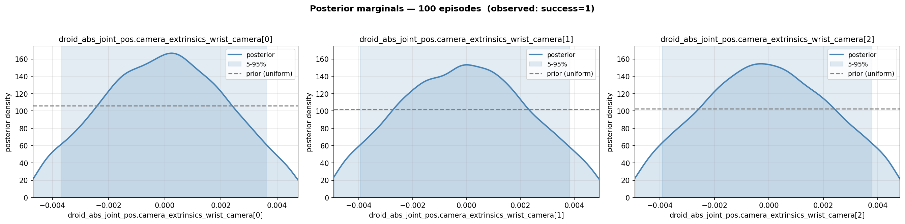

Multi-Node Evaluation#
A thorough evaluation requires many rollouts. For example, a moderately sized evaluation may have 20 tasks, 2 policies, 100 episodes per task, for a total of 4000 rollouts. Running this on a single machine is possible, but could longer than a day. We’d like answers more quickly. Arena uses OSMO to distribute execution across a cluster, in order to reduce the time it takes to run the evaluations.
Setting up OSMO#
Install the OSMO client: Submitting an Experiment requires the OSMO command-line client, installed and authenticated against your cluster. The OSMO User Guide covers this; follow its Getting Started pages in order:
System Requirements — check your environment is supported.
Install Client — install the
osmoCLI.Setup Profile — point the client at your cluster.
Setup Credentials — authenticate with
osmo login.
Once osmo is installed and you can log in, you are ready to submit an Experiment.
Set up a cluster: The steps above assume you already have a cluster running OSMO. If you need to stand one up, see the OSMO Deployment Guide, which covers deploying the OSMO service and connecting your own compute.
Specifying a multi-node Experiment#
We use the same experiment files as for single-node evaluations to specify multi-node evaluations. Arena takes care of executing the evaluation described in an experiment file across a cluster.
{kind=link}

An Experiment YAML is submitted for multi-node execution. Arena schedules each Run as a parallel OSMO process, then collates per-env results into a shared output.#
How Arena maps an Experiment onto the Cluster#
Arena takes a simple approach to scheduling experiments across a cluster.
Parallel execution of Runs. Each
run(an entry under theruns:key in the experiment YAML) specifies a simulation environment and a policy, and is scheduled independently. Given enough resources, Runs execute in parallel; otherwise they are queued until resources are available.Policy servers. Each
runusing a server-backed remote policy starts its own policy server and an experiment runner that uses it. For theserunentries, executing everything in parallel requires2 × number of RunsGPUs.One collected output. A final task collects the per-
runresults and uploads them to an output bucket.
Submit an Experiment#
Submit an Experiment with osmo/submit_arena_experiment.py. Point --experiment_cfg at an
Experiment YAML file. The command uses an experiment file included in the Arena repository.
python osmo/submit_arena_experiment.py \
--experiment_cfg isaaclab_arena_environments/robolab/experiment_configs/robolab_2_tasks_pi0_and_cosmos.yaml \
osmo.pool=isaac-dev-l40-03 \
osmo.platform=ovx-l40 \
'osmo.output_url="swift://pdx.s8k.io/AUTH_team-isaac/isaaclab_arena/workflows/{{workflow_id}}"' \
osmo.workflow_name=robolab_2tasks_pi_and_cosmos_100ep
This submits the two robolab tasks, each evaluated with both the pi0.5 and cosmos-action-edge policies. The policies are executed on L40 nodes.
For these commands to work, you need a cluster running OSMO.
Replace osmo.pool=isaac-dev-l40-03 with your cluster name,
osmo.platform=ovx-l40 with the model of available compute nodes,
and osmo.output_url with the Swift path where the results are published to (keep
{{workflow_id}} for a unique path per submission).
The submission script outputs:
Workflow submit successful.
Workflow ID - robolab_2tasks_pi_and_cosmos_100ep-1
Workflow Overview - https://us-west-2-aws.osmo.nvidia.com/workflows/robolab_2tasks_pi_and_cosmos_100ep-1
Workflow Dashboard - https://ovx-l40-03.osmo.nvidia.com/dashboard/#/search?namespace=osmo-prod&q=92795d52950048e8
In the OSMO dashboard, you can view the workflow and its runs:

An OSMO workflow for a multi-node Arena Experiment. Each arena-run group runs an experiment
runner and a policy server in parallel; a final collect task gathers the results.#
Viewing the Results#
To view the results, we first need to download the results.
use the GUI to navigate to the
collect-experiment-outputstaskclick on the task to view its details
click on the
Logsbuttonscroll to the bottom of the logs and you will see the path to the upload bucket e.g.
Uploaded swift://pdx.s8k.io/AUTH_team-isaac/isaaclab_arena/workflows/robolab_2tasks_pi_and_cosmos_100ep-1download the experiment data with
osmo download swift://pdx.s8k.io/AUTH_team-isaac/isaaclab_arena/workflows/robolab_2tasks_pi_and_cosmos_100ep-1 <PATH_TO_DOWNLOAD_FOLDER>
To view the experiment results, double click on the index.html file in the downloaded folder.
This will open the results in your browser.
The results of the evaluation can also be plotted as a grouped success-rate bar chart. Point the plotting script at the downloaded folder and list the policy suffixes present in the Run names:
python -m isaaclab_arena.visualization.plot_success_rates \
<PATH_TO_DOWNLOAD_FOLDER> \
--policies pi0 cosmos \
--output <PATH_TO_DOWNLOAD_FOLDER>/success_rates.png
The script reads every episode_results file below the folder and groups the bars by task,
where each task name is a Run name with its _pi0 or _cosmos suffix removed. This produces
a plot like:
{kind=link}

The results of an evaluation of pi0.5 and cosmos-action-edge policies on 20 robolab tasks.
The experiment was run on a cluster of L40 nodes using the Arena
experiment configuration file robolab_20_tasks_pi0_and_cosmos.yaml.#
Note that the results are subject to multiple sources of randomness, so your results will not be exactly the same.
Large-scale Sensitivity Analysis#
In Sensitivity Analysis we covered how to run sensitivity analysis on a single-node evaluation. However, sensitivity analysis typically requires many rollouts to produce an accurate estimate, so it is a good candidate for multi-node execution. Here we show how to run sensitivity analysis using multiple compute nodes.
To run pi0.5 with the wrist camera extrinsics variations enabled run:
python osmo/submit_arena_experiment.py \
--experiment_cfg isaaclab_arena_environments/robolab/experiment_configs/robolab_20_tasks_pi0.yaml \
osmo.pool=isaac-dev-l40-03 \
osmo.platform=ovx-l40 \
'osmo.output_url="swift://pdx.s8k.io/AUTH_team-isaac/isaaclab_arena/workflows/{{workflow_id}}"' \
osmo.workflow_name=robolab_20tasks_pi_extrinsics \
experiment_cfg.shared.variations.droid_abs_joint_pos.camera_extrinsics_wrist_camera.enabled=true
Note that you should replace isaac-dev-l40-03 with your cluster name and ovx-l40 with the model of available compute nodes.
Download the results as described above with a command of the form:
osmo download swift://pdx.s8k.io/AUTH_team-isaac/isaaclab_arena/workflows/robolab_20tasks_pi_extrinsics-1 <PATH_TO_DOWNLOAD_FOLDER>
Where robolab_20tasks_pi_extrinsics-1 is the workflow name assigned by OSMO during submission.
To analyze the results, for sensitivity to camera extrinsics variations, run:
python -m isaaclab_arena.analysis.sensitivity.generate_report \
--outcome success \
--factors droid_abs_joint_pos.camera_extrinsics_wrist_camera \
--output <PATH_TO_DOWNLOAD_FOLDER>/camera_extrinsics_sensitivity_report.png \
--episode_results <PATH_TO_DOWNLOAD_FOLDER>/banana_in_bowl_pi0/episode_results_rebuild0.jsonl
Each Run writes its own episode_results_rebuild0.jsonl under
<PATH_TO_DOWNLOAD_FOLDER>/<run_name>/. Replace banana_in_bowl_pi0 with the Run
you want to analyze.
For our experiment, the sensitivity analysis report looks like this:
{kind=link}

Sensitivity analysis report for camera extrinsics variations for the pi0.5 policy on the banana_in_bowl task.#
Note
Running sensitivity analysis on multi-policy runs is not yet supported.
We’re working on supporting this in the future on main.
Reach out at Isaac Lab Arena Issues if you need this now.
Adjust the Experiment at submission time#
You can tweak a Run at submission time, without editing its YAML file.
To view the available override-able values, use the --list_overrides flag.
python osmo/submit_arena_experiment.py \
--experiment_cfg isaaclab_arena_environments/robolab/experiment_configs/robolab_20_tasks_pi0_and_cosmos.yaml \
--list_overrides
For example, to shorten the banana in bowl pi0.5 run to four episodes:
python osmo/submit_arena_experiment.py \
--experiment_cfg isaaclab_arena_environments/robolab/experiment_configs/robolab_20_tasks_pi0_and_cosmos.yaml \
experiment_cfg.runs.banana_in_bowl_pi0.rollout_limit.num_episodes=4
Of particular note is the ability to override the way the experiment is executed.
Overrides prefixed with osmo. set the workflow’s scheduling and per-Run resources. The most
common ones are:
Override |
Default |
Meaning |
|---|---|---|
|
|
Name the workflow appears under in OSMO. |
|
|
Target compute pool. |
|
|
Hardware platform requested for each Run. |
|
|
GPUs requested per Run. |
|
|
CPU cores requested per Run. |
|
|
Memory requested per Run. |
|
|
Storage requested per Run. |
|
|
Swift path for collected results.
Use |
Preview before submitting#
Add --dry_run to render the OSMO workflow YAML and print it instead of submitting it.
python osmo/submit_arena_experiment.py \
--experiment_cfg isaaclab_arena_environments/robolab/experiment_configs/robolab_20_tasks_pi0_and_cosmos.yaml \
osmo.workflow_name=alex_arena_20tasks_pi_cosmos_robolab_100ep \
--dry_run